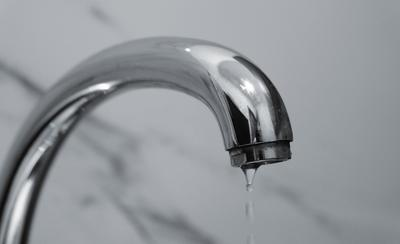
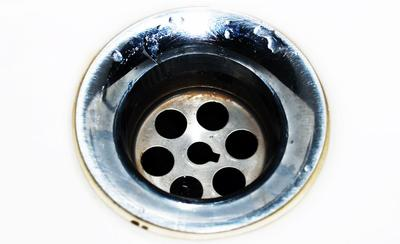
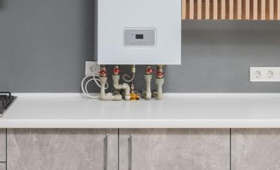
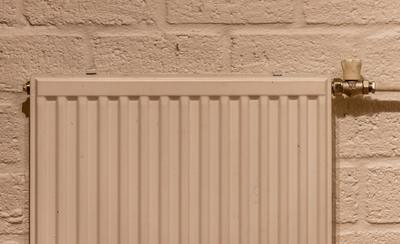
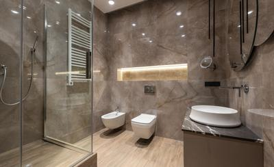
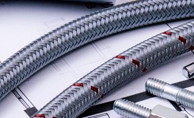

Fugas de agua
Goteos, manchas de humedad y tuberías que pierden. Se localiza el punto exacto de la fuga y se repara o se sustituye el tramo.
DemoFontanería de ejemplo en Madrid Oeste
Fontanería para fugas de agua
Reparamos fugas, desatascamos, instalamos calentadores y calderas, revisamos la calefacción y reformamos baños. Caudal es un negocio ficticio: esta web enseña cómo quedaría la de una fontanería real.
Seis trabajos, de la gota que no para a la reforma completa del baño. En esta página no hay importes: lo que cuesta una avería depende de lo que se encuentre al verla.

Goteos, manchas de humedad y tuberías que pierden. Se localiza el punto exacto de la fuga y se repara o se sustituye el tramo.

Fregaderos, lavabos, duchas, inodoros y bajantes que no tragan. Se desatasca y se mira por qué se había atascado.

Instalación, sustitución y reparación de calentadores, termos eléctricos y calderas.

Radiadores que no calientan, purgados, llaves y válvulas, y circuitos de calefacción por agua.

Cambio de bañera por plato de ducha, sanitarios, grifería y la fontanería completa del baño.

Una fuga que no para o un atasco que desborda no pueden esperar: llama y te decimos cuándo podemos ir. Si huele a gas, llama primero al 112.
Cuatro pasos, siempre en este orden.
Por teléfono o por WhatsApp: qué falla, desde cuándo y en qué parte de la casa. Una foto ayuda.
Se revisa la instalación y se busca el origen de la avería, no solo lo que se ve.
Te explicamos qué hay que hacer y lo que cuesta. Nada se toca hasta que tú decides.
Se hace el trabajo, se prueba que no pierde y se deja la zona recogida.
Demo: lo que escribas aquí llega a WhiteMoon Agencia IA, no a una fontanería real.